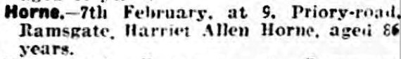
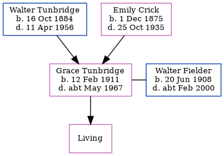

Harriet Allen Horn (née Fox) 1839 - 1926
[ Home ] | [ Calendar ] | [ Surnames Index ] | [ Census Index ] | [ Family History ]Harriet Fox, the wife of James Horn (the three times great-uncle of Nigel Horne), was born in St Peters, Thanet, Kent, England on May 13, 18391,2,3, was baptized there on Jun 23, 1839 and married James (a brewer's laborer with whom she had 11 children: James, Maria L, Rosa Louisa, Rosa Louisa, Isabella, Thomas G, Alice, Charles, Arthur Albert, Emily and Pleasant Alice, along with 1 surviving child) at St John the Baptist Church, Margate, Kent, England on Apr 21, 18604.
During her life, she was living at Hertford Cottage, Hertford Place, Ramsgate, Kent on Apr 2, 18717; at Chapel Road, St Lawrence, Thanet, Kent on Apr 3, 18816; and at 67 Addington Street, Ramsgate, Kent on Mar 31, 19015.
She died on Feb 7, 1926 at 9 Priory Road, Ramsgate, Kent.
Children
- James was born in 1861
- Maria L was born in 1863
- Rosa Louisa was born in 1864
- Rosa Louisa was born c. Feb 1864
- Isabella was born in 1865
- Thomas G was born c. 1869
- Alice was born in 1870
- Charles was born on Oct 15, 1872
- Arthur Albert was born on Feb 12, 1875
- Pleasant Alice was born c. May 1879
Citations
- 1891 England Census Online publication - Provo, UT, USA: The Generations Network, Inc., 2005.Original data - Census Returns of England and Wales, 1891. Kew, Surrey, England: The National Archives of the UK (TNA): Public Record Office (PRO), 1891. Data imaged from The National
- England & Wales births 1837-2006 - Findmypast
- Kent Baptisms - Findmypast
- Kent Marriages And Banns - Findmypast
- 1901 England, Wales & Scotland Census - Findmypast (was age 61 and the wife of the head of the household)
- 1881 England, Wales & Scotland Census - Findmypast (was age 40 and the wife of the head of the household)
- 1871 England, Wales & Scotland Census - Findmypast (was age 28 and the wife of the head of the household)
Media
Thanet Advertiser - 20 Feb 1926

1871 England, Wales & Scotland Census - GBC/1871/0014301282
Kent, Canterbury Archdeaconry marriages 1538-1928 - GBPRS/CANT/M/97023806/2
England & Wales births 1837-2006 - BMD/B/1839/2/AK/001064/010
Kent, Canterbury Archdeaconry baptisms 1538-1912 - GBPRS/CANT/B/96350365
England Births & Baptisms 1538-1975 - R_884662814
Family Tree
Generated by ged2site. Last updated on Jun 11, 2024